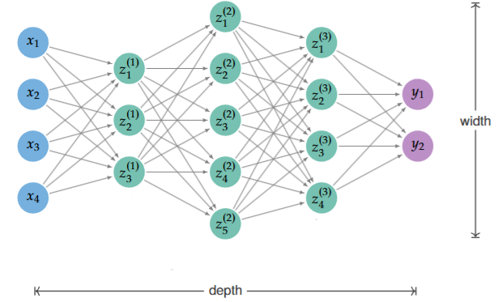
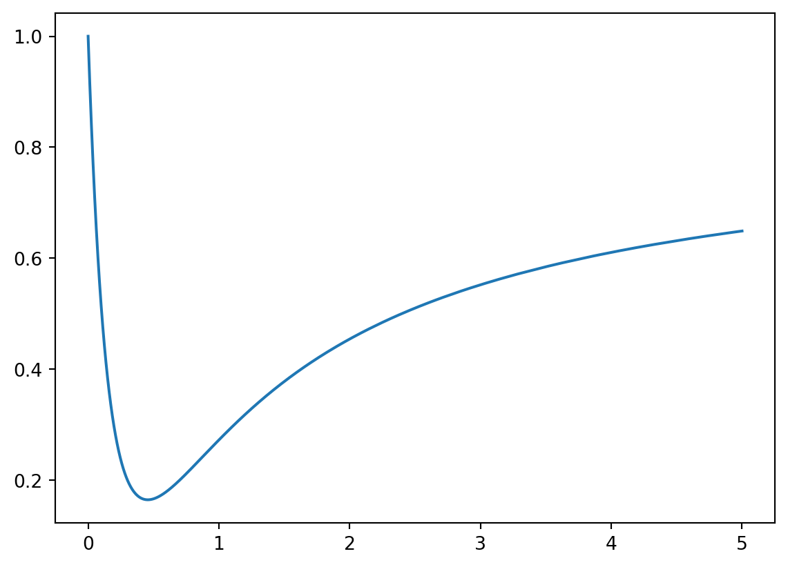
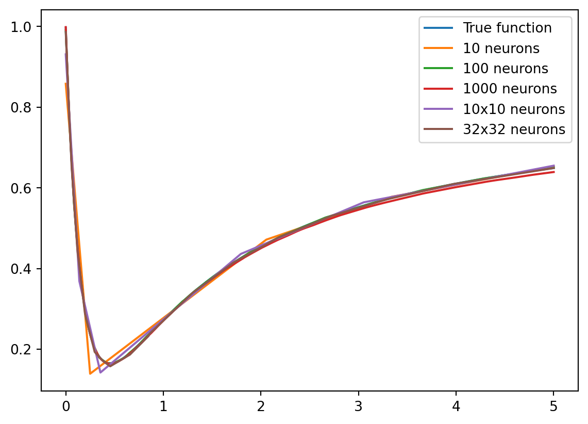
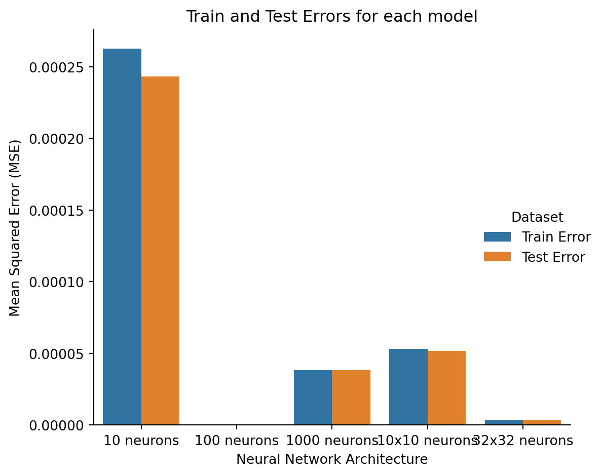

import torch
import torch.nn as nn
class ShallowNetwork(nn.Module):
def __init__(self, input_size, hidden_size, output_size):
super(ShallowNetwork, self).__init__()
self.layers = nn.Sequential(
nn.Linear(input_size, hidden_size),
nn.ReLU(),
nn.Linear(hidden_size, output_size),
)
def forward(self, x):
output = self.layers(x)
return outputMulti-Layer Perceptron
Introduction
The Multi-Layer Perceptron (MLP) is the most common type of neural network architecture. It consists of an input layer, one or more hidden layers, and an output layer. The MLP is a feedforward neural network, meaning that the data flows through the network in one direction, from the input layer to the output layer. A network that has one hidden layer is called a shallow network, while a network with more than one hidden layer is called a deep network.
If we let \(z^{(i)}, i = 0, \cdots, n+1\) indicate the layer values of a Multi-Layer Perceptron with \(n\) hidden layers, then the following equations describe the MLP:
- \(z^{(0)} = x\), the input layer
- \(z^{(i)} = \sigma(W^{(i)}z^{(i-1)} + b^{(i)}), i = 1, \cdots, n+1\), the hidden and output layers
- Where \(\sigma\) is an activation function for the \(i^\text{th}\) layer
- \(W^{(i)}\) is the weight matrix for the \(i^\text{th}\) layer
- \(b^{(i)}\) is the bias vector for the \(i^\text{th}\) layer
- \(z^{(n+1)} = y\), the output layer
We can observe that each layer is a linear transformation of the previous followed by an activation function. The following diagram better illustrates the MLP:

Activation Functions
The activation function is responsible for introducing non-linearity into the network, allowing it to learn complex patterns. Common activation functions include:
Component-Wise activation Functions (the activated value depends on a single value):
- Sigmoid: \(\sigma(x) = \frac{1}{1 + e^{-x}}\)
- Tanh: \(\tanh(x) = \frac{e^x - e^{-x}}{e^x + e^{-x}}\)
- ReLU: \(\operatorname{ReLU}(x) = \max(0, x)\)
- Leaky ReLU: \(f(x) = \max(0, x) + \alpha \min(0, x)\), where \(\alpha\) is a small constant.
Layer-wise activation Functions (the activated value depends on the whole layer or a subset of the layer):
- Softmax: \(\operatorname{softmax}(x)_i = \frac{e^{x_i}}{\sum_{j} e^{x_j}}\)
- Maxpool: \(\operatorname{maxpool}(x) = \max(x)\), where \(x \subseteq z^{(i)}\)
- Normalize: \(\operatorname{normalize}(x) = \dfrac{x - \mu}{\sigma}\), where \(\mu\) is the mean and \(\sigma\) is the standard deviation of \(x\).
- Normalize can be layer-wise or batch-wise. Layer-wise normalization normalizes the values of the layer of a single input. While batch-wise normalization normalizes the values of the layer for a batch of inputs, where each component of the layer gets normalized batch-wise independently.
- Dropout: \(\Big( \operatorname{dropout}(x) \Big)_i = \begin{cases} 0 & \text{with probability } p, \\ x_i & \text{with probability } 1 - p.\end{cases}\). That is, each element of the input is either dropped (set to 0) with a probability of \(p\) or kept with probability \(1-p\).
There are many other activation functions, but these are the most common ones. Without activation functions, neural networks would be equivalent to linear regression models, and they would not be able to learn complex patterns. Therefore, activation functions are an essential component of neural networks. Choosing the right activation function for a given task is an art rather than a science, but the $
Universal Function Aproximator
The major reason why neural networks are so powerful is that they can be used as a universal function approximator. This means that they can approximate any function to arbitraty precision, given enough layers and neurons. To illustrate this property, we’ll focus on the \(\operatorname{ReLU}\) activation function.
To begin, we’ll need to accept that continuous functions on an arbitrary interval \([\beta_1, \beta_{N+1}]\) can be aproximated by a piecewise linear function to an arbitrary level of precision, given enough pieces. That is, we can approximate any function \(f(x)\) by a function, \(F(x)\) of the form:
\[ F(x) = \begin{cases} f(\beta_1) + \alpha_1(x-\beta_1) & \text{if } x \in [\beta_1, \beta_2], \\ f(\beta_2) + \alpha_2(x-\beta_2) & \text{if } x \in [\beta_2, \beta_3], \\ \vdots & \vdots \\ f(\beta_N) + \alpha_N(x-\beta_N) & \text{if } x \in [\beta_N, \beta_{N+1}] \end{cases} \]
Then, we can re-write it as \[ F(x) = f(\beta_1) + \alpha_1 x + \sum_{i=2}^{N} (\alpha_i - \alpha_{i-1}) \operatorname{ReLU}(x - \beta_i). \]
This represents a shallow network with a hidden layer with \(N\) neurons. This means that with a shallow network, we can approximate any function to an arbitrary level of precision.
However, it might not always be feasible to use a shallow network to approximate thousands or even millions of pieces for more complex functions. Deep Networks are a way to overcome this problem by using multiple hidden layers. This allows us to approximate functions with a much smaller number of pieces, which is more resource efficient. Regardless, there’s always a trade-off between the number of parameters in the network and the precision of the aproximation.
PyTorch
PyTorch let’s us create a shallow network with an arbitrary number of input, hidden, and output neurons as follows:
To test the universality of the shallow network, let’s consider the function \(f(t) = \dfrac{5t^2 -3t+1}{6t^2+4t+1}\) on the interval \([0,5]\).

class DeepNetwork(nn.Module):
def __init__(self, input_size, hidden_size1, hidden_size2, output_size):
super(DeepNetwork, self).__init__()
self.layers = nn.Sequential(
nn.Linear(input_size, hidden_size1),
nn.ReLU(),
nn.Linear(hidden_size1, hidden_size2),
nn.ReLU(),
nn.Linear(hidden_size2, output_size),
)
def forward(self, x):
output = self.layers(x)
return outputIn a previous course we were able to recontruct the function using data fitting, but we needed prior knowledge of the function. Let’s see if we can do it without any prior knowledge using a shallow network with 10, 100, and 1000 neurons in the hidden layer. Deep networks with hidden layers of size (10, 10) and (32, 32) are also included to compare depth vs width.
The networks are defined below:
model10 = ShallowNetwork(1,10,1)
model100 = ShallowNetwork(1,100,1)
model1000 = ShallowNetwork(1,1000,1)
model10_10 = DeepNetwork(1,10,10,1)
model_32_32 = DeepNetwork(1,32,32,1)After training the networks, we can plot the results and see how well the networks fit the data. Later sections will explain how to train a neural network, for now we’ll focus on the results.

They all aproximate the function pretty well, however this makes it hard to tell them appart. Instead let’s look at the error for each model.

We can see that the error doesn’t necesarily decrease as the number of neurons increases. The shallow network with just 100 neurons has the lowest error, while the network with 1000 neurons has the second highest error. Sometimes, adding more neurons can actually increase the error. There are many possible reasons for this, which are discussed in a later section.
Neural Networks are a very powerful tool when trying to estimate the underlying function of a dataset. Finding the right architecture for a neural network can be a difficult task, and is often a trial and error process. Regardless, they have a high estimation potential, but good practices are needed to harness their full power.